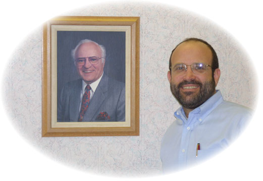

|  | For generations, the DiLoreto family has provided professional
medical care in a long-standing family tradition. The DiLoreto family
has provided their neighbors with a pride and competence that only comes
from a strong sense of community service. |
| Legal Information
Management (LIM) assists professionals and organizations in managing
text-based information. For 20 years, LIM has provided options for organized
text and images on desktops, LANs and the Internet for professionals who
need to manage information: librarians, archivists, litigators, researcher
and information professionals. Founder and principal, Ann DiLoreto, earned her Masters in Library Science in 1976 and has worked as a law librarian in Boston and the Bay Area. Ann provides lectures, seminars and training workshops and has written for trade journals on various topics in text management. |
|
| The Great Pumpkin
Adventures of Diana Doucet are chronicled by giant pumpkin grower and
family friend Vince Zunino. His pages follow Diana's giant pumpkin growing
adventures, featuring a grower's log for each year, beginning with "Pumpkincape
from 1999..." Clicking on the chapter links of "Diana's Great Pumpkin Adventure (2000)" show the grower's log that features detailed growing techniques, time-lapse growth photos, and extensive preparations and care that are required to grow award-winning giant pumpkins. Vince's Team Zunino Home Page is
pretty funny, too. |
|
Growing up in a small mountain village in Switzerland, Chef Emile Mooser learned to appreciate cooking with local treasures of Gruyère's cheeses, fresh fish from mountain streams, wild game and wild mushrooms, berries and greens. In 1973, he opened Emile's Swiss Affair in downtown San Jose, whose contemporary "French Cuisine with a Swiss Accent" reflects the Swiss belief in making the best use of peak seasonal items. Our friend Emile's classic artistry, work ethic, love of people and passion for the culinary arts have won him countless awards and international recognition, and made him a beloved personality in the South Bay Community. One of the best restaurants in San Jose, Emile's has been named by "Zagat" Survey 2003 as the best traditional French restaurant in the San Francisco Bay Area. |
|
Children’s Musical Theater San Jose is a leader in the world of youth theater companies, renowned for its innovative spirit in every area of programming. CMTSJ produces a full season of shows, ranging from classical Broadway fare to exciting new hits and original works seen by an audience of more than 42,000 annually. CMTSJ also offers classes and production workshops that provide fundamental training and performing opportunities for all interested students in the Silicon Valley area, and a wide variety of outreach programs to local schools, social service agencies and community groups. The award-winning online program, Theater as Digital Activity, helps CMTSJ share the magic of youth theater with children, teens and adults around the world. |
|
The Drama Group was originally formed in 1963, under the auspices of the Saratoga Federated Church and presented its early productions in Richards Hall of the church. By 1966, the audiences had grown so large that the Drama Group began presenting its productions in the Saratoga Council Chambers, changing the name of the building to the Saratoga Civic Theatre. By 1969 the Group incorporated under the name Saratoga Drama Group and continued to present high-caliber musicals to sellout audiences. Several Bay Area premieres are included in its impressive list of shows . Today the Group presents three musicals each year, providing its audience with a varied mix of innovative, newer shows as well as well-known favorites. |
|
Singer and harpist Verlene Schermer
presents a diverse, upbeat style of music that leans toward contemporary
jazz and blues. She accompanies her dynamic, versatile voice on folk harp
and cross-strung harp. Performances on her French-made, bright blue electric
harp have attracted media attention. Verlene performs primarily as a solo
artist, but also in several groups, from duos to jazz combos, to larger
ensembles and dance bands. |
|
The Marie Stinnett Dance school has been teaching jazz and tap dancing since 1958 in Campbell, California. Marie and her staff specialize in teaching a style of jazz and tap that reaches across style boundaries. A long list of her students have gone on to professional careers. Marie Stinnett started her dance career in Los Angeles, performing in more than a dozen major films. After moving to Campbell, Marie continued her dancing career by performing and choreographing numerous musicals for, what is now, the "American Musical Theatre," where she continues to instruct young people in their Theatre Arts Institute. Her studio tries to provide each student with the necessary skills to reach whatever dancing goal they wish to achieve, from professional dancer to hobbyist. |
[ DiLoreto Home | About | Bandwagon | Links | Guestbook | Are You a DiLoreto? | Paul's Website ]